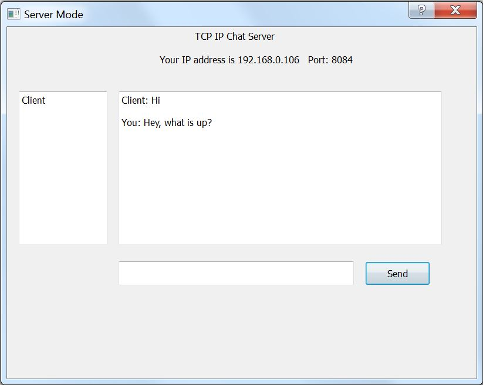

This is the most dedicated product I have ever been working on to this point of my career. I am very proud to be on the team of highly skilled professionals that built this worldwide recognized and acclaimed product. Corel Draw Graphics Suite project is based on extensive C++ frameworks that consists of 50+ different engines and roughly 40 million lines of code. So far, I have contributed to the translation export/import functionality, transient drawing features, Microsoft Dial support implementation, Node Alignment, typography, performance improvements, google test integration and finally I was heavily involved in the app-wide port of CorelDraw product to the MacOS.
Designer 2019 Technical Suite
Designer aka CorelDraw Technical Suit product is mostly targeted towards rapidly changing needs of the industrial engineering industry. The clients that using this application ranges from a small team of professionals to the entire automotive production industry. I have been very lucky to work on Designer 2019 where I was in charge of implementing of extended functionalities for projected axis. This work was deemed to be the main feature of the Designer 2019 version and led me to filing the patent related to “defining projected plane from existing parallelograms” patent number: 31779.69 (L0069).
Painter 2021
Unlike CorelDraw and its derivatives products Painter is a raster-based drawing application. Its boasting a superior brush library that had not been matched by any other software on the market. This is the project I am currently working on and so far I have contributed to trackpad gesture support and touchbar implementation.
TMNT Legends is an RPG Game that was developed on proprietary C++ Engine by a team of 70+ people. This is also the first commercial game on my resume. During development phase of this project I was in charge of creating visuals for User Interface, coding Navigational + UI logic and implementing animations. This project is unique because it combines Model View Controller Pattern with Entity Component System.
GameDev Rush
GameDevRush is a tower defense game that I made as part of the final assignment in 3rd semester of my game development program. This is the first game that I made in real OpenGL based Framework. During development of this simple game I have learned tons about programming along with some basic math and trigonometry. The goal of this assignment was to create and implement proper pathfinding algorithm which should be capable to guide an enemy from point A to point B.
*The soundtrack in this video is a property of Two Steps From Hell
*Textures belong to Ironhide Game Studio
RatVolution
RatVolution is a scrolling prototype game that I made in C++/OpenGL Framework. During development of this prototype I learned a great deal about porting games from one platform to another. In this case I was able to bring a few concepts from previously made games in XNA. These concepts consist of smooth scrolling, parallax and use of two-dimensional sprite sheets. At the time of development, it was very challenging to port C# syntax and huge amount of built in XNA capabilities to naked C++ Framework, but at the end it was worthwhile and very rewarding.
*Soundtrack belongs to Daft Punk(remixed by Rakohus)
*All art except the character was created by me in Adobe Photoshop
Catcher
Catcher is an iPhone game that heavily relies on Box2D Physics engine. This game was made in C++ and wrapped in Objective-C loop so
that it would work on various IOS devices. The main goal of this game is to survive the maximum amount of time possible. Each time
the player catches the ball, the timer goes up by 5 seconds. Players will lose the game if the timer reaches zero or they miss the
ball 3 times. This game was inspired by Nintendo's GAME&WATCH egg game that was made in early 80s.
*The soundtrack in this video is a property of Two Steps From Hell
BlackJack
Yet another game that I have created in C++/OpenGL framework. It took me about two days to write the code and a day to create/find art assets. The main inspiration for this game was a little console application assignment that I have encountered during the first semester of game-dev program at Algonquin College.
*Music performed by SensualMusicClub
Remedo Visto
This game stands out because it was developed with a team of seven people. The game was written in C#. The XNA framework that we used had been modified and was utilizing a Unity like component base design. This was the first major project that I ever worked with the real team. At the time we did not know what agile development was, so the project was developed by following waterfall pattern. During development of this project I took the role of co-producer and component programmer. Mainly I was responsible for the following components: Physics, Collision and Two-dimensional Sprite Rendering.
Freedom Fighters
This is main menu prototype that I have made for one of the assignments in school. This project was very appealing for me because I
had to create entire soundtrack that follows main menu's thematic on my own. In order to create soundtrack I was using FL Studio and
Adobe Audition.
Construction Site
This is one of the first projects that I made in unity. In this game the player moves through the construction site as a pedestrian as
well as in the loader.For the loader movement I used Unity's built in wheel colliders. The Loader's model was made in 3DS Max and
exported in to Unity's framework.
*The soundtrack in this video is a property of Dick Dale
Mission Impossible
This prototype also has been made in Unity3D. I was trying to make AI more realistic by limiting its field of view to 90 degrees. In
order to achieve this I was using a dot product. Dot product allowed me to calculate a 45 degrees from player's forward vector. So if
AI detects a player within 45 degrees from its center game would be restarted.
*The soundtrack in this video has been taken from Mission Impossible film
TCP/IP Chat
At first look it might seem that this chat TCP/IP program has nothing to do with games, however the same principles of networking can
be applied to the games. I wrote this program in C++ /Qt Creator and it's based on Client - Server architecture. This program allows
to send messages through internet by utilizing TCP/IP protocol.

Game Number One
And last but definitely not least my very first game. Please note that prior to creation of this game I had no coding experience
whatsoever. This game has been exclusively made in windows loop without using any Graphics Libraries such as OpenGL . All texture
drawing in this game using BitBlit function.
*All sounds, music and textures were taken from Mario Game
My Sound Editing Project
This example includes short video clip with soundtrack that I customized in Adobe Audition. The main goal of this project was to
create sounds and voice over soundtrack with special effect sounds.
*This video belongs to UbiSoft studio
My Custom Character
For this project I had to model and UV my custom character in 3ds Max. When everything was done in 3ds Max I exported my character to
Mudbox and painted UV template. Bump map and baked shadows were also applied in Mudbox.
*The soundtrack in this video is a property of Two Steps From Hell
Rat Character Creation
This is the example of my coloring work of a scanned hand-drawn character in Photoshop CS6 suite.
I inherited this sketch from my friend and was originally planing to use it in my RatVolution prototype.
 Home
Portfolio
Skills
Home
Portfolio
Skills